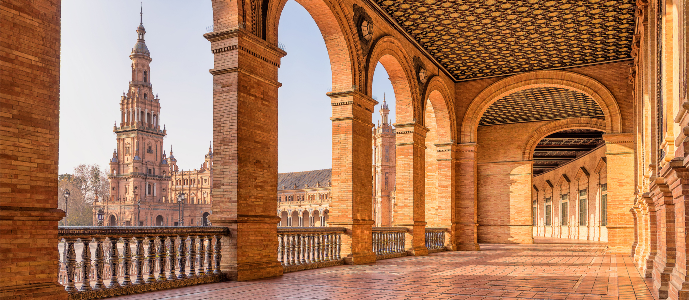
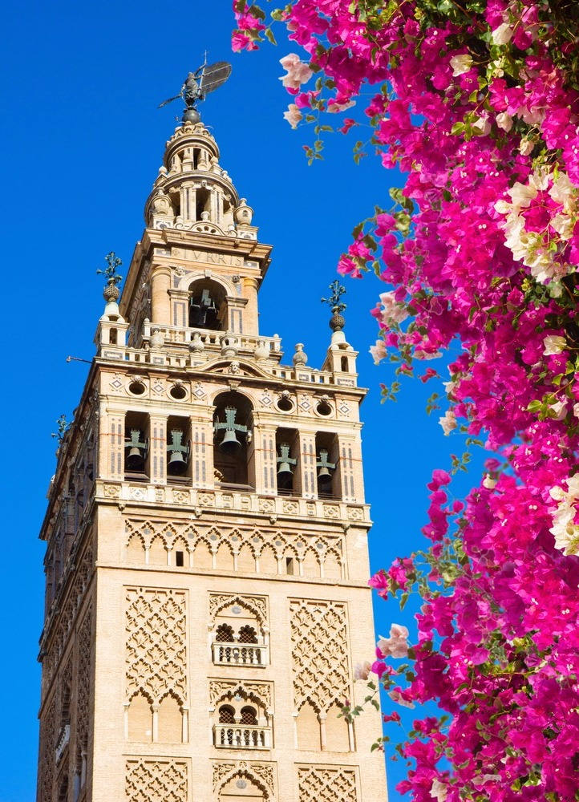
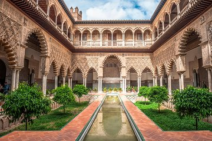
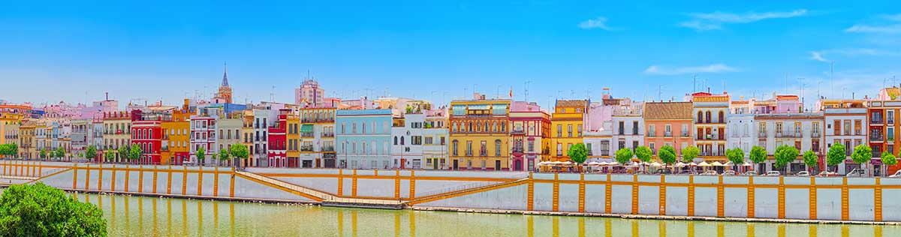
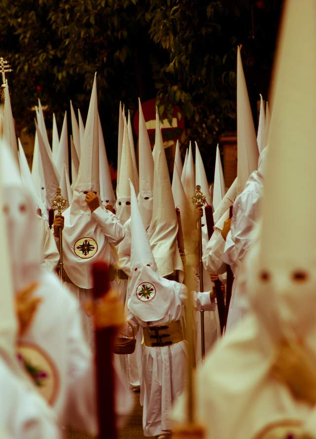
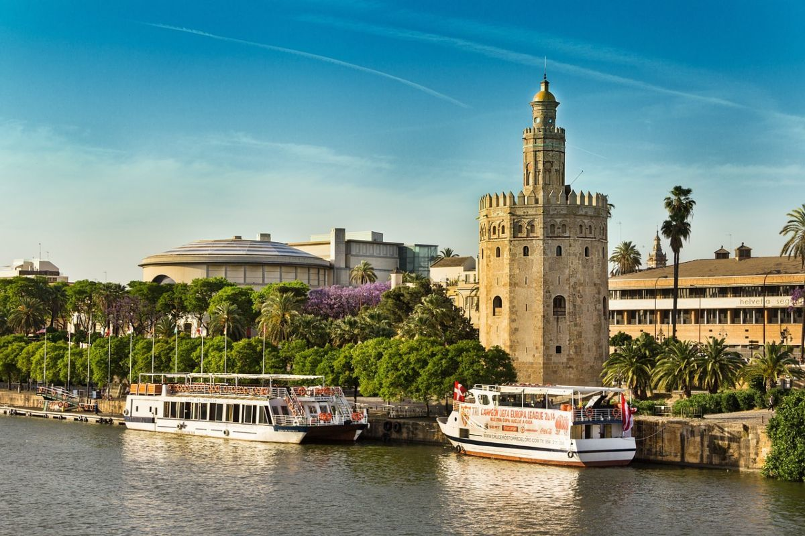

Galería de Fotos

Construida para la Exposición Iberoamericana de 1929, la Plaza de España es uno de los espacios más espectaculares de Europa. Con su gran edificio semicircular, sus canales y puentes, y los bancos de azulejos que representan las provincias españolas, es el símbolo arquitectónico más reconocible de Sevilla. Fue escenario de películas como Star Wars o Lawrence de Arabia.



La Giralda (izquierda): campanario de la Catedral de Sevilla, antiguo minarete almohade del siglo XII. El Real Alcázar (centro): palacio real en uso más antiguo de Europa, Patrimonio de la Humanidad. El Puente de Triana (derecha): el primer puente fijo de Sevilla, construido en 1852 sobre el Guadalquivir.
La Semana Santa de Sevilla es considerada la más importante del mundo. Más de 60 hermandades recorren sus calles durante ocho días portando pasos de gran valor artístico. El ambiente, los saeteros y el olor a incienso convierten esta celebración en una experiencia única e irrepetible, declarada de Interés Turístico Internacional.


La Torre del Oro es una torre dodecagonal construida en el siglo XIII por los almohades a orillas del Guadalquivir. Fue utilizada como atalaya defensiva y como prisión. Actualmente alberga el Museo Naval de Sevilla.